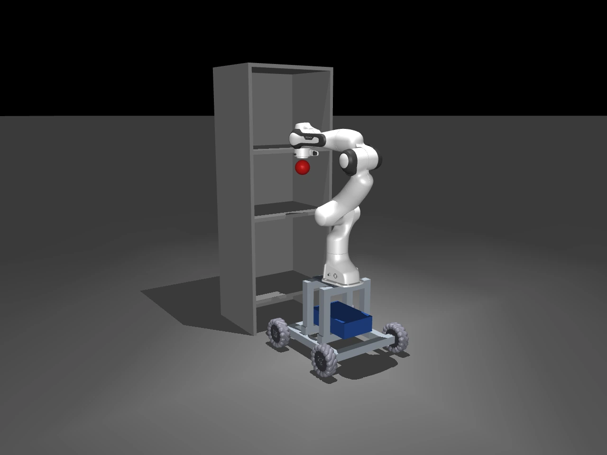
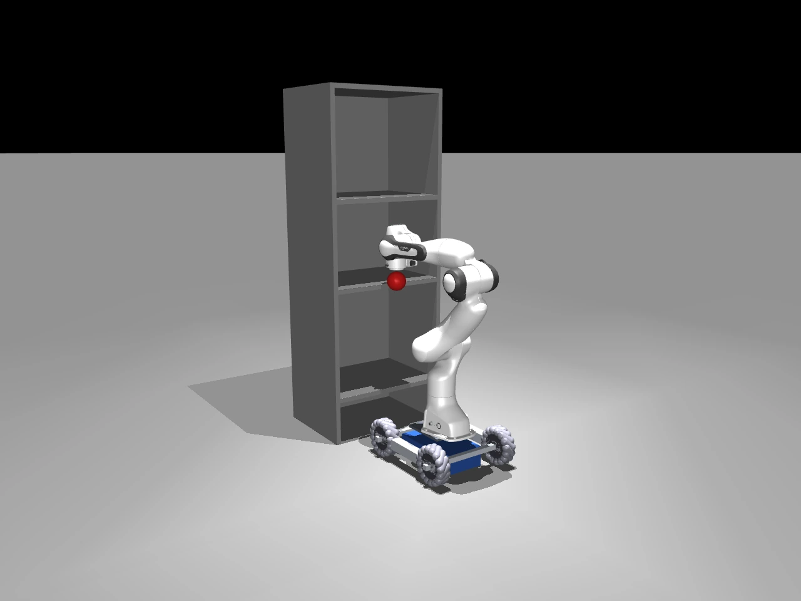

In this article
Coding agents beyond the digital world
Coding agents are rapidly becoming more autonomous. They can increasingly pursue complex goals over long trajectories, adapting their solutions as they encounter new information and failures. Most evaluations of these agents, however, remain confined to digital environments such as terminals.
The physical world introduces a different kind of challenge. An agent's decisions are mediated through a physical system with partial obersvability, uncertainty, unrecoverable failures, and complex dynamics. This naturally raises a broader question:
Can general-purpose coding agents close the loop between observation, reasoning, decision, and reflection in a physically grounded environment?
We introduce RLE-Bench to evaluate coding agents through the work of robot learning engineers (RLE). Robot learning engineering provides a particularly rich setting for studying physically grounded agency. RLEs design robots, control them to interact with the world, collect data, write programs and diagnosis from multimodal feedback. The capabilities we would like to evaluate span over the agent’s development process, not merely the policy it eventually produces.
Complementary views of physically grounded agent capability
A capable physical-world agent needs more than a good controller. The work of a robot learning engineer runs from operating a robot directly, to training policies that outlive any single session, to designing the hardware those policies run on, to building the perception that every decision depends on. A weakness at any one of these stages caps what the agent can deliver at the others, so a single score on a single task would hide more than it reveals. RLE-Bench therefore looks at these abilities from four complementary angles, and each is motivated below before its tasks are described.
Interactive Control
03 TASKSBefore an agent can build anything for a robot, it has to be able to operate one. Direct interaction is where physical grounding is most exposed: observations are partial, actions cannot be undone, and progress depends on reading multimodal feedback correctly. In these tasks the agent interacts with the world directly to achieve given goals, whether by controlling the robot itself, by building the tools that let another agent do so, or by acting to gather the evidence a decision needs.
T01Agentic Control
Agent-in-the-loop control for five kitchen tasks. The agent works under one of three harness levels and must solve each task in as few interaction steps as possible.
- L1 — bare action APIs
- L2 — L1 plus camera calibration and learned models such as SAM 3 and Contact-GraspNet
- L3 — L2 plus privileged object information
- Work product
- Agent context and control experience
- Development
- 8 h · 50,000 steps · 8 CPUs · 1 GPU
- Evaluation
- Success rate over five trials of the same task in held-out kitchen scenes
GPT-6 Astra · 6× speed · RoboCasa · DefrostByCategory
Demo goal: Put the potato and corn into the bowl on the counter, and move the orange and banana into the sink to defrost the fruit under running water.
T02Harness Engineering
The agent builds its own harness: the layer of perception tools, controllers, and documentation that sits between a coding agent and the robot. The harness is then handed to an independent agent, which must reuse it to solve a new held-out task zero-shot.
- Work product
- Perception tools, controllers, and a manual
- Development
- 8 h · 75,000 steps · 8 CPUs · 1 GPU
- Evaluation
- Success rate of a fresh agent solving a new held-out task with the produced harness, over five trials
GPT-6 Astra · 4× speed · RoboCasa · StoreLeftoversInBowl
Demo goal: Transfer the chicken drumstick and the vegetable from their plates into the bowl, then carry the filled bowl to the fridge and place it inside.
T03Embodied Reasoning
The agent must interact with the simulator to gather further observations, then reason about the scene to decide how to solve the task or what the answer is. Unlike static visual question answering, these problems cannot be solved from a single observation; the agent has to act in the world.
- Work product
- Task-specific decision-making or answer
- Development
- Up to 9 h · 50,000 steps · 8 CPUs · 1 GPU
- Evaluation
- Average success rate or performance over five subtasks
GPT-5.6 Sol · 2× speed
Demo goal: Probe the sealed box with the robot and use its physical response to identify which marked quadrant—A, B, C, or D—contains the hidden ballast.
Policy Development
02 TASKSDirect control does not scale. Most robot behaviour is ultimately delivered as a learned policy, and how well that policy works is decided long before deployment, by the choices an engineer makes about data, rewards, curricula, and transfer. We care about this ability because it is what turns one solved instance into durable, reusable capability. These tasks evaluate the training and deployment procedures that determine a policy’s capability, efficiency, and robustness, with the resulting policy or recipe tested under conditions the agent never saw.
T04Whole-Body Motion Tracking
Agents train a humanoid motion-tracking policy to follow reference motions while maintaining stability under various deployment conditions.
- Work product
- An exported ONNX-format tracking policy
- Development
- 4 h · 8 CPUs · 1 RTX 5090 GPU
- Evaluation
- Sim-to-sim transfer from MuJoCo-Warp to MuJoCo-C under hidden perturbations
GPT-6 Astra
Demo goal: Make the humanoid follow the reference dance, coordinating its arms, legs, and torso while maintaining balance.
T05NanoVLA Recipe
Agents develop vision-language-action (VLA) models in LIBERO and RoboTwin across six tracks covering capacity and robustness.
- Work product
- One training recipe per subtask
- Development
- 4 h · 1 H100 GPU
- Evaluation
- The delivered recipe is used to train a VLA model, which is then evaluated under different circumstances. Each subtask is scored by the success rate of that VLA model
Mechanical Design
02 TASKSHardware bounds what any controller can achieve. An under-powered base or an uncompensated arm cannot be fixed in software, so an engineer has to reason about mass, torque, geometry, and cost together with the control that will run on them. These tasks evaluate mechanical design and its supporting control software as a coupled system, scored on physical instances the agent did not see during development.
T06Mobile Base Design
The agent designs a common mobile base and controller for three types of arms, Panda, UR5e, and xArm7, subject to physical and resource constraints.
- Work product
- MJCF model of the mobile base and controller code
- Development
- 2 h · 4 CPUs
- Evaluation
- Worst-case performance across the three arms under different shelf targets, payloads, and static and dynamic checks
2× speed in shelf-reach trials
Demo goal: Use the submitted mobile base and controller to move the Panda arm’s end effector to the marked shelf targets at different heights and depths while carrying a 1 kg payload.
T07Gravity Compensation for Gello
The agent co-designs passive gravity compensation and adaptive feedforward control for GELLO leader arms, covering three different arm types used in teleoperation.
- Work product
- Mechanical designs and calibration programs
- Development
- 3 h · 4 CPUs
- Evaluation
- Unseen physical instances, poses, and payloads test holding, backdrivability, torque headroom, and recovery
4× source-video speed
Demo goal: Design gravity-compensated GELLO leader arms for Panda, UR5e, and xArm7. The video shows the submitted mechanisms from multiple angles and along prescribed joint-motion paths; motion is guided for visualization.
Perception & Estimation
02 TASKSEvery downstream decision is only as good as the state it is made from. Real sensing is noisy, occluded, and rate-limited, and an estimator has to run within the compute a robot actually has. These tasks evaluate state estimation and the integration of visual and force feedback under sensing and computational constraints.
T08Pose Estimation
The agent develops an estimator that identifies asymmetric objects and recovers their planar position and orientation during motion and partial occlusion, across four variants that differ in sensing modality and allowed methods.
- Work product
- An estimator or trained TorchScript model
- Development
- 2 h · Subtask-specific
- Evaluation
- A hidden battery of 100 static frames and ten push episodes in which the arm crosses the line of sight, scored by translation and rotation error. A wrong shape identification zeroes the group, and inference slower than 10 Hz on CPU is penalized
Gemini 3.7 Flash
Demo goal: Estimate the red object’s position on the tabletop and its orientation as it moves and the robot partially blocks the camera view.
T09Bin Clearing
Agents integrate visual and force feedback into a policy that transfers steel brackets from a cluttered bin to a conveyor.
- Work product
- A standalone closed-loop policy package
- Development
- 4 h · 4 CPUs
- Evaluation
- Eight hidden piles. Clearance, throughput, and penalties for drops, damage, and impacts determine the score
GPT-6 Astra · 10× speed
Demo goal: Pick the steel brackets out of the cluttered bin and place them onto the conveyor, clearing the bin while avoiding drops, damage, and excessive impacts.
How agents solve physically grounded problems
GPT-6 Astra
Observe a failed cube handoff, analyze the feedback, revise the code, and retry.
In RLE-Bench, writing code is only one part of the job. Agents can run their solutions, observe what happens in simulation, and use those outcomes to decide what to try next.
This creates a simple loop: build, act, observe, revise. A controller that looks correct in code may still collide with the environment; a mechanical design may reach its target but become unstable; a training recipe may run successfully without producing robust behavior. The simulator turns these failures into feedback the agent can act on.
Agent learning loop
Start from a task, form a hypothesis, and test it in the public simulation environment.
artifactOr retained state,
depending on task
Hidden physical test
The resulting solution faces hidden scenes, seeds, embodiments, or physical conditions.
With limited time, interactions, and compute, agents must decide which experiments are worth running. Each trial is a chance to test a hypothesis, uncover a failure, or check whether a revision helped. Once development ends, the agent’s solution is evaluated under hidden physical conditions it cannot tune against directly.
Evaluation setup. Tasks run in Harbor environments with network access disabled by default and declared allowlists for model APIs where needed. Submissions are evaluated in task-specific sandboxes or constrained subprocesses; hidden conditions, reference assets, and scoring remain under verifier control.
The performance profiles
The initial results reveal an uneven picture: some systems recover physical state from visual observations far more effectively, several are close on policy learning, and even capable agents produce designs that fail basic physical checks. Three findings help explain what these agents can do—and where their reasoning still breaks down.
Visual grounding shows the largest separation
On perception, GPT-6 Astra scores 72.06, compared with 42.87 for Claude Opus 5. Their embodiment and learning scores are much closer. Among the families with equal task coverage, the largest gap between these two systems appears in recovering physical state from visual observations. This is a key ingredient of agents that can use environmental feedback to guide action.
T08 · Pose Estimation · Matched task coverage
Policy learning shows a narrower gap
Astra, Opus 5, and GPT-5.6 Sol score 80.56, 78.70, and 71.52 on the current learning evaluation. Their closer results suggest that training and deploying a motion-tracking policy may be a more established capability for these systems. This finding is limited to T04; the broader recipe-engineering task, T05, is still pending.
T04 · Whole-Body Motion Tracking · T05 pending for all systems
Physical design remains hard
A design can achieve its visible objective and still fail the physics around it. In the T06 case study, Astra’s mobile base earns full credit for shelf access and payload margin, yet scores zero on static stability and lateral/turning checks. Reaching a target is only part of the problem: the agent must also anticipate how its design behaves under load and motion.
T06 + T07 · Embodiment and co-design · Matched task coverage
One score, four different capabilities
Each task produces a normalized score. We aggregate tasks within each capability family, then average the four families equally into the RLE Index, reported on a 0–100 scale. But the family profile often tells us more than the final number. The family charts above and the overall scores below show both.
The next question is what helps agents close these gaps. The task studies below examine the tools they receive, the tools they build for others, and the physical consequences they miss.
How much robotics knowledge does an agent need?
Today’s coding agents often enter robotics with help: perception models, coordinate transforms, motion primitives, or even direct access to simulator state. How much do these abstractions matter as the underlying agent gets stronger?
T01 tests this question through three nested interfaces. The kitchen tasks, evaluation scenes, seeds, interaction limits, and scoring rule stay fixed; only the supplied robotics tools and information change. This lets us examine what an agent gains from reusable software and what it gains from access to otherwise hidden state.
Low-level interface
Camera observations, optional depth, robot state, and low-level actions are available. The agent implements its own perception and control logic.
Reusable robotics tools
The same observations are supplemented by perception models, coordinate transforms, geometry utilities, and motion primitives.
Privileged scene state
The complete L2 interface is supplemented by task-relevant object and fixture poses and additional simulator state.

Most systems Other than GPT-6 Astra in this study achieve higher task success and often lower cost with richer interfaces. Systems that struggle with the low-level interface tend to gain more from robotics scaffolding, while the strongest L1 performer needs less help. However, adding additional harness hurts the capabilities of GPT-6 Astra.
How an agent improves a policy through hill climbing
Astra’s T04 Harbor run shows what policy hill climbing looks like in practice: nearly four hours of training, simulator checks, failed experiments, and checkpoint selection. Early PPO checkpoints learn to stay upright; later revisions target observation history, feed-forward corrections, precision, and robustness. Broader evaluations repeatedly overturn apparent gains.
T04 Policy Training Progress ▶ Final policy
GPT-6 Astra · 86 logged milestones · 58 reported scores
Loading the development timeline…
Read the log evidence
The decisive step is a reliability tradeoff. A smoothed candidate passes 345 development episodes at a reported 0.9137, then falls twice in a fresh 200-seed audit. Astra revisits the robustness continuation and selects an average of three checkpoints: the final policy is evaluated with 545 different random seeds, each specifying a randomized test condition for one 20-second episode. All 545 episodes finish without a fall, with an exact pooled tracking_multi mean of 0.912364. Here, 545 is the number of development evaluation runs—not the number of training steps or checkpoints. This development result is separate from the hidden-test reward and the aggregate benchmark results above.
Design is difficult under physical constraints
Consider these two mobile-base submissions from T06. Each is meant to support robot arms while reaching shelves and carrying payloads. The agent should use less materials and design base with less weight, but preserving static and dynamical stability.




Astra’s design reaches the shelves and carries the payloads: it earns full credit for shelf access and payload margin in the reported case. However, it fails a few stability tests.
GPT-6 Astra failed static & dynamic stability tests.
Download videoThese cases show how an agent can satisfy visible objectives while missing coupled physical consequences. Reach, load handling, and stability must hold together in the same design. A successful trajectory or a convincing preview cannot establish that they do.
Ending: Toward agents that learn from the physical world
Can agents close the loop with the physical world? The initial results show pieces of that capability: stronger and rapidly increasing visual grounding capability, closer performance among leading systems on motion-policy learning, resulting in effective manipulation with possibly less robotics scaffolding. They also expose a persistent difficulty: anticipating the physical consequences of a design.
The next step is to understand how these capabilities emerge through experimentation: which feedback changes an agent’s approach, which abstractions transfer, and which physical failures it repeatedly overlooks. Completing the pending tasks and examining development trajectories, uncertainty, and resource use will help answer those questions.
The next generation of coding agents may not simply write better robotics software. They may increasingly learn how the physical world responds to what they build.